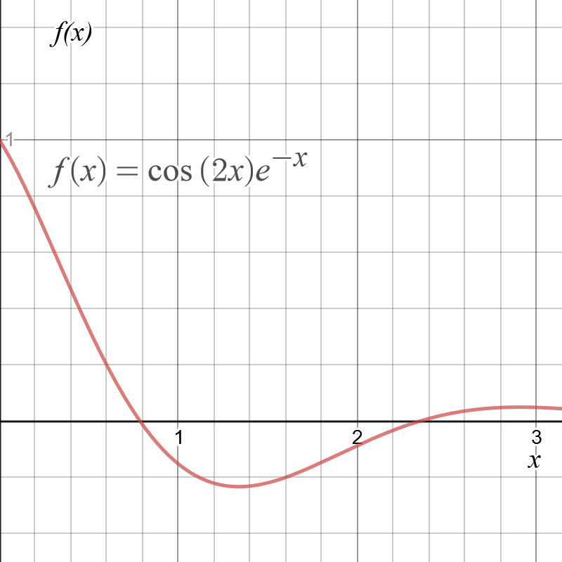
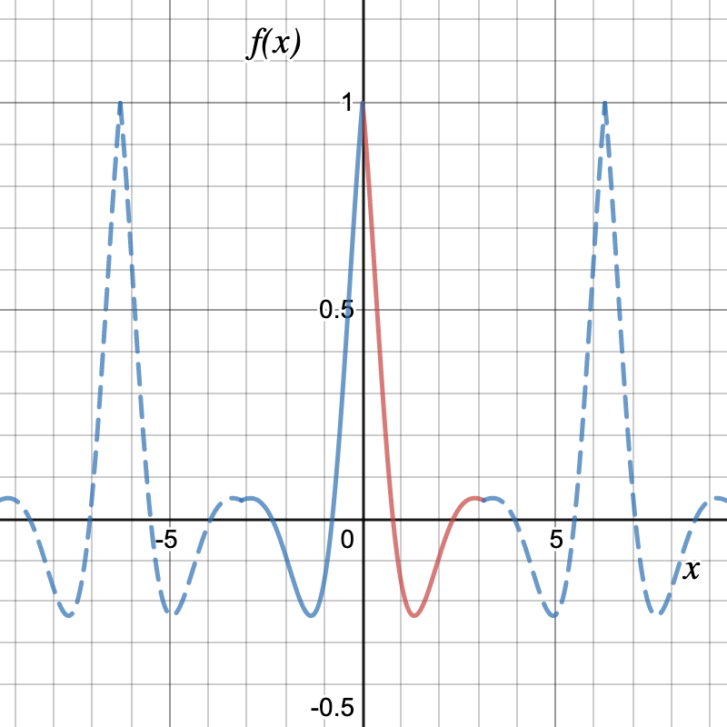
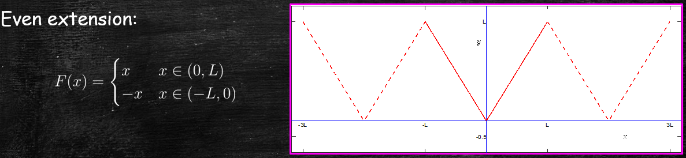

Advanced Calculus
Lecture 6
Jonathan Crofts
Nottingham Trent University
Advanced Calculus L6
- Odd and even extensions
- Fourier series of functions of general period
- Examples
Periodic extensions
- FS calculations for an odd or even function are greatly simplified
- Given a function $f$ defined on $(0,L)$ we would like to obtain a FS expansion in terms of either just sines or cosines
- We can do this by extending the function $f$ to be even/odd on the interval $(-L,L)$ and then extending to a $2L$-periodic function
Let us consider an example
\[ f(x) = \cos(2x)e^{-x},\quad x\in(0,\pi) \]We can extend this function to be either an odd or even function of period $2\pi$
What does the odd extension look like?
Since
\[ -f(-x) = -\cos(2x)e^x \]we have that
\[ f_\mathrm{oe}(x) = \begin{cases}\cos(2x)e^{-x},&x\in(0,\pi)\\ -\cos(2x)e^x,& x\in (-\pi, 0) \end{cases} \]which after extending periodically looks like...
Odd extension:
\[ f_\mathrm{oe}(x) = \begin{cases}\cos(2x)e^{-x},&x\in(0,\pi)\\ -\cos(2x)e^x,& x\in (-\pi, 0) \end{cases} \]such that $f(x+2\pi) = f(x)$ outside this range

What does the even extension look like?
Since
\[ f(-x) = \cos(2x)e^x \]we have that
\[ f_\mathrm{ee}(x) = \begin{cases}\cos(2x)e^{-x},&x\in(0,\pi)\\ \cos(2x)e^x,& x\in (-\pi, 0) \end{cases} \]which after extending periodically looks like...
Even extension:
\[ f_\mathrm{ee}(x) = \begin{cases}\cos(2x)e^{-x},&x\in(0,\pi)\\ \cos(2x)e^x,& x\in (-\pi, 0) \end{cases} \]such that $f(x+2\pi) = f(x)$ outside this range
Formally we can construct odd and even extensions as follows:
Even extension:
\[\color{#00FF00}{\boxed{\color{white}{f_\mathrm{ee} = \begin{cases}f(x)&x\in(0,L)\\f(-x)& x\in(-L,0)\end{cases}}}}\]And
Odd extension:
\[\color{red}{\boxed{\color{white}{f_\mathrm{ee} = \begin{cases}f(x)&x\in(0,L)\\-f(-x)& x\in(-L,0)\end{cases}}}}\]Advanced Calculus L6
- Odd and even extensions
- Fourier series of functions of general period
- Examples
Functions of any period
- Consider a function of period $T=2L$
- For example
- We would like to represent such functions as a FS consisting of terms like
\[ \color{red}{\boxed{\color{white}{ \cos\left(\frac{n\pi}{L}x\right) ~\text{ and }~ \sin\left(\frac{n\pi}{L}x\right) }}} \]
To see how to do this we make the following change of variables \[X = x\pi/L\] so that, for example,
\[ f(x) = \cos\left(\frac{n\pi}{L}x\right) = f(\frac{LX}{\pi}) =\cos(nX)=g(X) \]Importantly, $g(X)$ is a $2\pi$-periodic function.
- Note that the example over slide holds more generally, i.e. if $f(x)$ is $2L$-periodic then $g(X)$ is $2\pi$-periodic
To see this note that
\[
\begin{align*}
g(X+2\pi) &= f\left(\frac{L(X+2\pi)}{\pi}\right)\\ &=
f\left(\frac{LX}{\pi}+2L\right)=f\left(\frac{LX}{\pi}\right)=g(X)
\end{align*}
\]
Since $g(X)$ is $2\pi$-periodic we have its FS:
\[
\color{#00FF00}{\boxed{\color{white}{
g(X) = \frac{a_0}{2}+\sum_{n=1}^\infty\left[a_n\cos(nX)+b_n\sin(nX)\right]
}}}
\]
Under the above transformation the Euler integrals and FS become
Advanced Calculus L6
- Odd and even extensions
- Fourier series of functions of general period
- Examples
Example 6.1
Find the sine series of the function
\[ f(x) = x \quad \text{for } x\in(0,\pi)\quad (T=2L=2\pi) \]Solution:
We need the odd extension to compute the sine series (i.e. a FS consisting of sines only)

Since $F$ is odd we have $a_0=a_n=0, n=1,2,\ldots$
And
\[ \begin{align*} b_n &=\frac{1}{\pi}\int_{-\pi}^\pi F(x)\sin(nx)\mathrm{d}x\\ &= \frac{2}{\pi}\int_0^\pi f(x)\sin(nx)\mathrm{d}x\\ &= \frac{2}{\pi}\int_0^\pi x\sin(nx)\mathrm{d}x\\ &=\frac{2}{\pi}\bigg[-\frac{x}{n}\cos(nx)\bigg]_0^\pi+\frac{2}{n\pi}\int_0^\pi \cos(nx)\mathrm{d}x\\ &= \frac{2}{n\pi}\left(-(-1)^n\right) = \color{red}{\boxed{\color{white}{\frac{2}{n\pi}(-1)^{n+1}}}} \end{align*} \]Thus the FS for the function $F(x)$ is given by
\[ \color{red}{\boxed{\color{white}{ F(x)\sim \sum_{n=1}^\infty \frac{2}{n\pi}(-1)^{n+1}\sin(nx) }}} \]which equals $f(x)$ on the interval $(0,\pi)$
100 terms of the FS:

Example 6.2
Find the cosine series of the function
\[ f(x) = x \quad \text{for } x\in(0,L) \]Solution:
We need the even extension to compute the cosine series (i.e. a FS consisting of cosines only) Since $F$ is even we have $b_n=0, n=1,2,\ldots$
Thus
\[ a_0 = \frac{2}{L}\int_0^L x\mathrm{d}x = \frac{2}{L}\bigg[\frac{1}{2}x^2\bigg]_0^L = \color{red}{\boxed{\color{white}{L}}} \]And
\[ \begin{align*} a_n &=\frac{2}{L}\int_0^L x\cos\left(\frac{n\pi}{L}x\right)\mathrm{d}x\\\\ &= \frac{2}{L}\bigg[\frac{L}{n\pi}x\sin\left(\frac{n\pi}{L}x\right)\bigg]_0^L- \frac{2}{n\pi}\int_0^L\sin\left(\frac{n\pi}{L}x\right)\mathrm{d}x\\ &= \ldots \end{align*} \]...
\[ \begin{align*} a_n &= \frac{2}{L}\bigg[\frac{L}{n\pi}x\sin\left(\frac{n\pi}{L}x\right)\bigg]_0^L- \frac{2}{n\pi}\int_0^L\sin\left(\frac{n\pi}{L}x\right)\mathrm{d}x\\ &= -\frac{2}{n\pi}\bigg[-\frac{L}{n\pi}\cos\left(\frac{n\pi}{L}x\right)\bigg]_0^L\\ &= \color{red}{\boxed{\color{white}{\frac{2L}{n^2\pi^2}\left((-1)^n-1\right)}}} \end{align*} \]so that the FS is given by
\[ \color{#00FF00}{\boxed{\color{white}{ F(x) = \frac{L}{2} + \sum_{n=1}^\infty \frac{2L}{n^2\pi^2}\left((-1)^n-1\right) \cos\left(\frac{n\pi}{L}x\right) }}} \]Of course the FS given above for $F(x)$ converges to our original function $f(x)$ on the interval $(0,L)$, i.e.
\[ \color{#00FF00}{\boxed{\color{white}{ f(x) = \frac{L}{2} + \sum_{n=1}^\infty \frac{2L}{n^2\pi^2}\left((-1)^n-1\right) \cos\left(\frac{n\pi}{L}x\right) \text{ on } (0,\pi) }}} \]100 terms of the FS ($L=5$):

Lecture 6 Review
- In this lecture we covered
- Odd and even extensions
- Fourier series of functions of general period
- After this lecture you should
- be able to able to compute the odd/even extension of a function
- be able to compute Fourier series of functions of any period